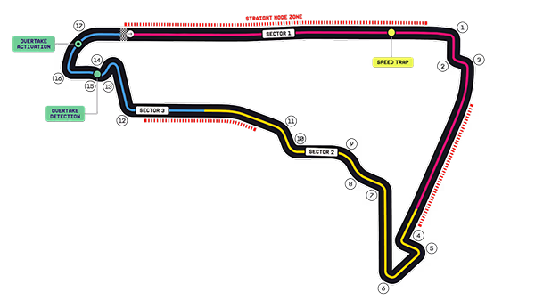
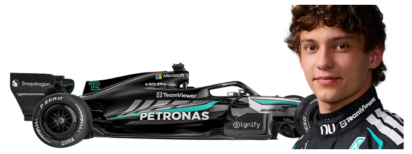

01
Uma carreira
em aceleração.
Use este espaço para contar uma curiosidade sobre a infância, a formação ou os primeiros passos do piloto no automobilismo.
ROLE PARA DESCOBRIR ↓VELOCIDADE. ESTRATÉGIA. HISTÓRIA.
Uma temporada. Vinte e dois pilotos. Uma história escrita volta a volta.
ROLE PARA ACOMPANHAR A TEMPORADADo apagar das luzes à bandeirada final, acompanhe os momentos que definem o campeonato. Circuitos, vencedores e detalhes de cada etapa reunidos em uma experiência feita para explorar no seu ritmo.

BANDEIRADA FINAL
MELBOURNE · 08 MAR 2026

Adicione aqui o momento decisivo da corrida e o que ele representou para o campeonato.
Uma tabela alimentada por JSON. Atualize o arquivo de dados para refletir a classificação mais recente.
i Os dados de exemplo são demonstrativos. Substitua data/standings.json por dados verificados e licenciados.
04 — PERFIL EM FOCO
Continue rolando para revelar curiosidades.
assets/images/kimi-antonelli.png
A nova geração em alta velocidade.
A TEMPORADA CONTINUA
Uma temporada viva, atualizada corrida após corrida.
VOLTAR AO TOPO ↑